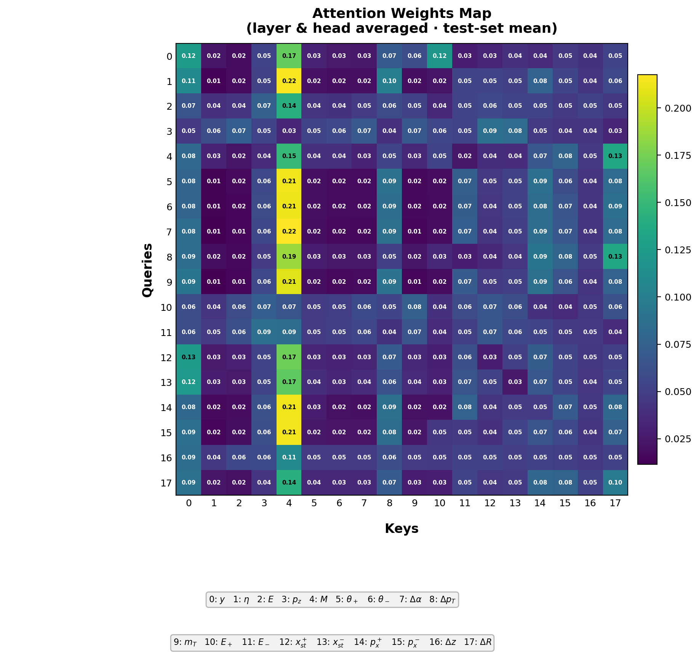
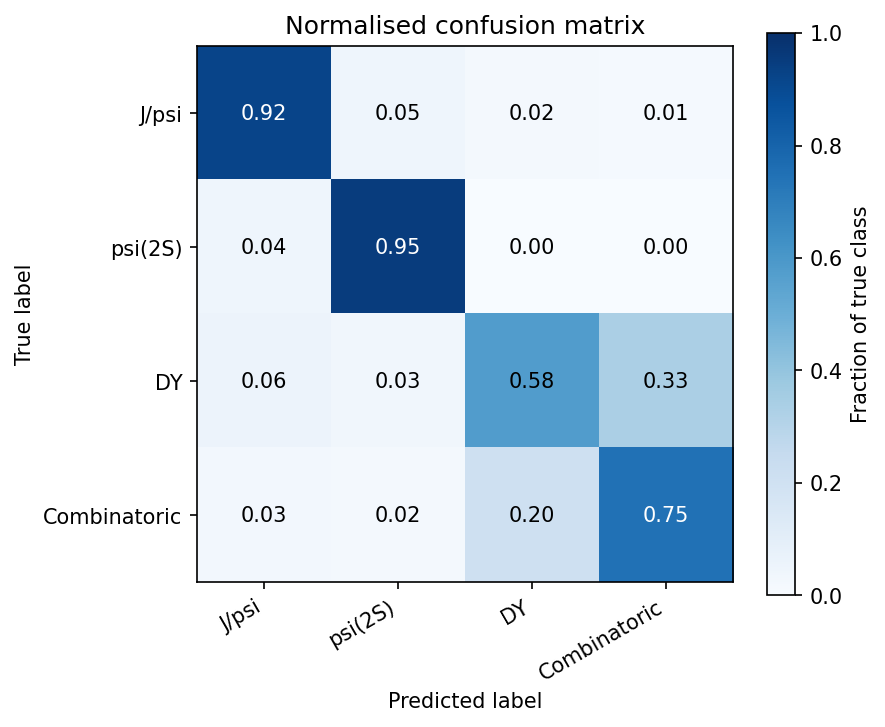
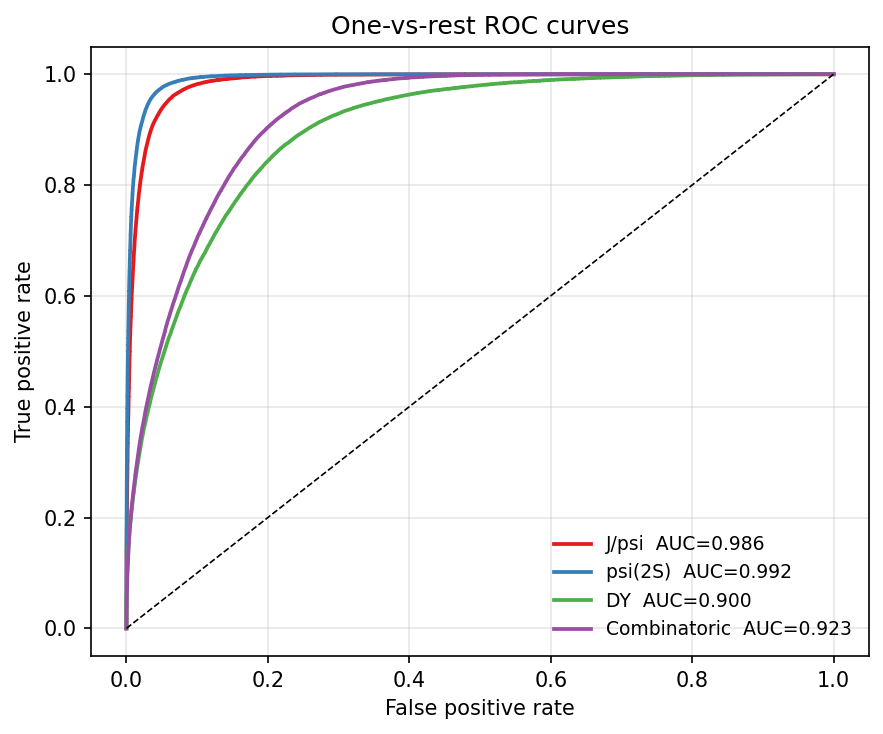
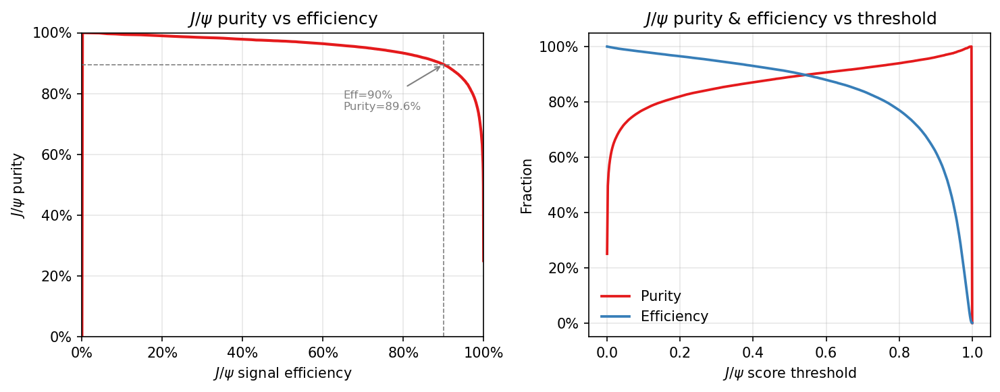

Transformer Dimuon Event Classifier
A feature-tokenization Transformer that classifies SpinQuest dimuon events into four categories — J/ψ, ψ(2S), Drell–Yan, and combinatoric background — from 18 reconstructed kinematic and geometric features. Unlike the feed-forward DNN baseline, the Transformer's self-attention mechanism learns pairwise correlations between all features simultaneously and produces interpretable attention weight maps that reveal which feature relationships the model relies on.
1 — Input Features
Each dimuon event is described by 18 scalar quantities reconstructed from the two muon tracks. These span the dimuon system kinematics, individual muon angles and energies, Station-1 tracking variables, and the vertex separation Δz:
| Index | Feature | Physics meaning |
|---|---|---|
| 0 | \(y_{\mu\mu}\) | Dimuon rapidity |
| 1 | \(\eta_{\mu\mu}\) | Dimuon pseudorapidity |
| 2 | \(E_{\mu\mu}\) | Dimuon energy (GeV) |
| 3 | \(p_z^{\mu\mu}\) | Longitudinal momentum (GeV/c) |
| 4 | \(M_{\mu\mu}\) | Invariant mass (GeV/c²) |
| 5 | \(\theta_{\mu^+}\) | Polar angle of \(\mu^+\) |
| 6 | \(\theta_{\mu^-}\) | Polar angle of \(\mu^-\) |
| 7 | \(\Delta\alpha\) | Opening angle between muons |
| 8 | \(\Delta p_T\) | \(p_T(\mu^+) - p_T(\mu^-)\) |
| 9 | \(m_T\) | Transverse mass \(\sqrt{M^2 + p_T^2}\) |
| 10 | \(E_{\mu^+}\) | Energy of \(\mu^+\) (GeV) |
| 11 | \(E_{\mu^-}\) | Energy of \(\mu^-\) (GeV) |
| 12 | \(x_{\rm st1}^+\) | \(\mu^+\) x-position at Station 1 (cm) |
| 13 | \(x_{\rm st1}^-\) | \(\mu^-\) x-position at Station 1 (cm) |
| 14 | \(p_{x,{\rm st1}}^+\) | \(\mu^+\) x-momentum at Station 1 |
| 15 | \(p_{x,{\rm st1}}^-\) | \(\mu^-\) x-momentum at Station 1 |
| 16 | \(\Delta z_{\rm vtx}\) | Vertex z-separation \(z_{\mu^+} - z_{\mu^-}\) (cm) |
| 17 | \(\Delta R\) | \(\sqrt{(\Delta\eta)^2 + (\Delta\phi)^2}\) |
2 — How Features Get Encoded into Tokens
A standard DNN flattens all 18 numbers into one vector and multiplies by a single weight matrix. The Transformer takes a fundamentally different approach: each feature is treated as an independent token in a sequence of length 18, and a separate linear layer projects each scalar to a \(d\)-dimensional embedding:
Feature-specific projection
\[ \mathbf{t}_i = W_i\, x_i + b_i \in \mathbb{R}^{d}, \qquad i = 0, \ldots, 17 \]Each feature gets its own weight vector \(W_i\) because the 18 quantities live in completely different physical units (GeV, radians, cm, …). A shared projection would force the model to treat, say, energy and a position identically — which is physically wrong.
A learned positional embedding \(\mathbf{p}_i \in \mathbb{R}^d\) is then added so the model knows which feature index it is looking at:
\[ \tilde{\mathbf{t}}_i = \mathbf{t}_i + \mathbf{p}_i \]The result is a sequence of 18 vectors, each of dimension \(d = 64\), passed into the Transformer encoder.
3 — How the Attention Weight Map Is Calculated
Inside each encoder layer, multi-head self-attention computes a compatibility score between every pair of feature tokens. For a single head, three linear projections produce Query (\(\mathbf{Q}\)), Key (\(\mathbf{K}\)), and Value (\(\mathbf{V}\)) matrices:
\[ \mathbf{Q} = \tilde{\mathbf{T}}\,W^Q, \quad \mathbf{K} = \tilde{\mathbf{T}}\,W^K, \quad \mathbf{V} = \tilde{\mathbf{T}}\,W^V \qquad W^{Q,K,V} \in \mathbb{R}^{d \times d_k} \]The raw attention score between feature \(i\) (query) and feature \(j\) (key) is their scaled dot product:
\[ e_{ij} = \frac{\mathbf{q}_i \cdot \mathbf{k}_j}{\sqrt{d_k}} \]A softmax over \(j\) normalises these scores into attention weights that sum to 1 for each query row:
\[ a_{ij} = \frac{\exp(e_{ij})}{\sum_{k=0}^{17} \exp(e_{ik})} \]The attention matrix \(\mathbf{A} \in [0,1]^{18 \times 18}\) is then used to form a weighted combination of value vectors:
\[ \text{head output}_i = \sum_{j=0}^{17} a_{ij}\,\mathbf{v}_j \]With \(H = 4\) heads (head dimension \(d_k = 16\)), the four outputs are concatenated and linearly projected back to \(\mathbb{R}^d\). Averaged over all heads, layers, and test-set events, the result is the attention weight map shown below: entry \((i,j)\) tells how strongly feature \(j\) is attended to when processing feature \(i\).

Self-attention weight map averaged over all encoder layers, attention heads, and test-set events. Row \(i\) (Query) shows how feature \(i\) distributes attention across all Keys (columns). Brighter cells indicate stronger learned correlation.
What the map reveals physically
- Features 4–9 (\(M_{\mu\mu}\), \(\theta_\pm\), \(\Delta\alpha\), \(\Delta p_T\), \(m_T\)) attend strongly to each other — consistent with the kinematic constraint that invariant mass, opening angle, and individual momenta are tightly correlated.
- Station-1 variables (12–15) form a coherent block: the model learns that the two track positions and their x-momenta jointly encode whether the event geometry is consistent with a real vertex or a fake combinatoric pair.
- \(\Delta z_{\rm vtx}\) (16) and \(\Delta R\) (17) act as global context tokens that many other features attend to, reflecting their broad discriminating power.
4 — From Attention to Multiclass Classification
After \(L = 4\) encoder layers each refining the token representations, the 18 output vectors are mean-pooled into a single event-level embedding:
\[ \mathbf{h}_{\rm event} = \frac{1}{18}\sum_{i=0}^{17} \mathbf{h}_i^{(L)} \in \mathbb{R}^{d} \]A final LayerNorm and a linear classification head map this to four class logits, which a softmax converts to per-event class probabilities:
\[ \hat{p}(c \mid \text{event}) = \text{softmax}\!\left(W_{\rm cls}\,\text{LN}(\mathbf{h}_{\rm event}) + b_{\rm cls}\right)_c, \quad c \in \{\text{J/}\psi,\,\psi',\,\text{DY},\,\text{Comb}\} \]The event is assigned to the class with the highest probability, or passed through a configurable threshold cut to trade signal efficiency for purity.
Architecture at a glance
Input (B, 18)
│
├─ feature_projections[i]: Linear(1 → 64) × 18 # one per feature
├─ pos_embed: Embedding(18, 64) # learned position
│
├─ TransformerEncoder × 4 layers
│ └─ each layer: PreNorm → MHA(4 heads) → FFN(256)
│
├─ mean pool over 18 tokens → (B, 64)
├─ LayerNorm(64)
└─ Linear(64 → 4) → softmax # J/ψ ψ' DY Comb5 — Classification Performance
The model is trained on balanced classes (equal counts, downsampled to the minority) with an 80/10/10 train/val/test split, optimising unweighted cross-entropy loss. The checkpoint with the lowest validation loss is retained for evaluation.

Normalised confusion matrix on the test set. Each row sums to 1.

One-vs-rest ROC curves with area under curve (AUC) per class.
Per-class recall from the confusion matrix: J/ψ 92%, ψ(2S) 95%, DY 58%, Combinatoric 75%. The DY–Combinatoric confusion (33% / 20%) is physically expected — both classes share similar kinematics and are the hardest to separate. The purity–efficiency curve below shows J/ψ purity as a function of signal efficiency, with the model achieving ∼92% J/ψ recall at the balanced operating point.

6 — Comparison with the DNN Baseline
| Model | Params | Accuracy | AUC (J/ψ / ψ′ / DY / Comb) | J/ψ AUC | J/ψ purity @ 90% eff. |
|---|---|---|---|---|---|
| DNN baseline (512→256→128→64, BN) | ∼400K | ∼90% | — | — | ∼90% |
| Transformer (d=64, H=4, L=4) | ∼50K | 80% | 0.986 / 0.992 / 0.900 / 0.923 | 0.986 | 84.8% |
Numbers to be filled after full 200-epoch runs. The Transformer uses 8× fewer parameters.
Technology Stack
| Tool | Role |
|---|---|
| PyTorch 2.7 | Transformer model, training loop |
| NumPy / scikit-learn | Data pipeline, evaluation metrics |
| Matplotlib | Attention maps, ROC/purity plots |
| Rivanna HPC / Slurm | GPU training via Apptainer container |